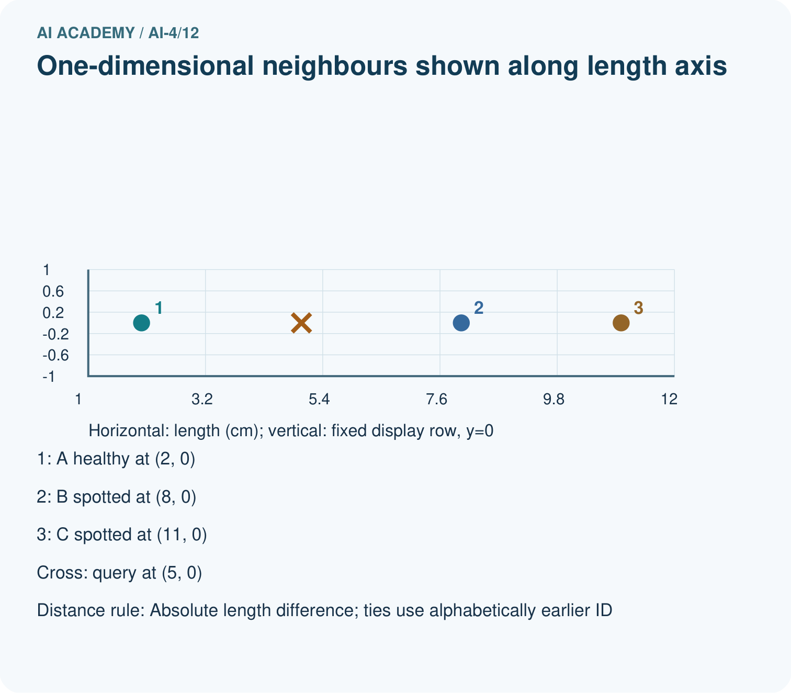
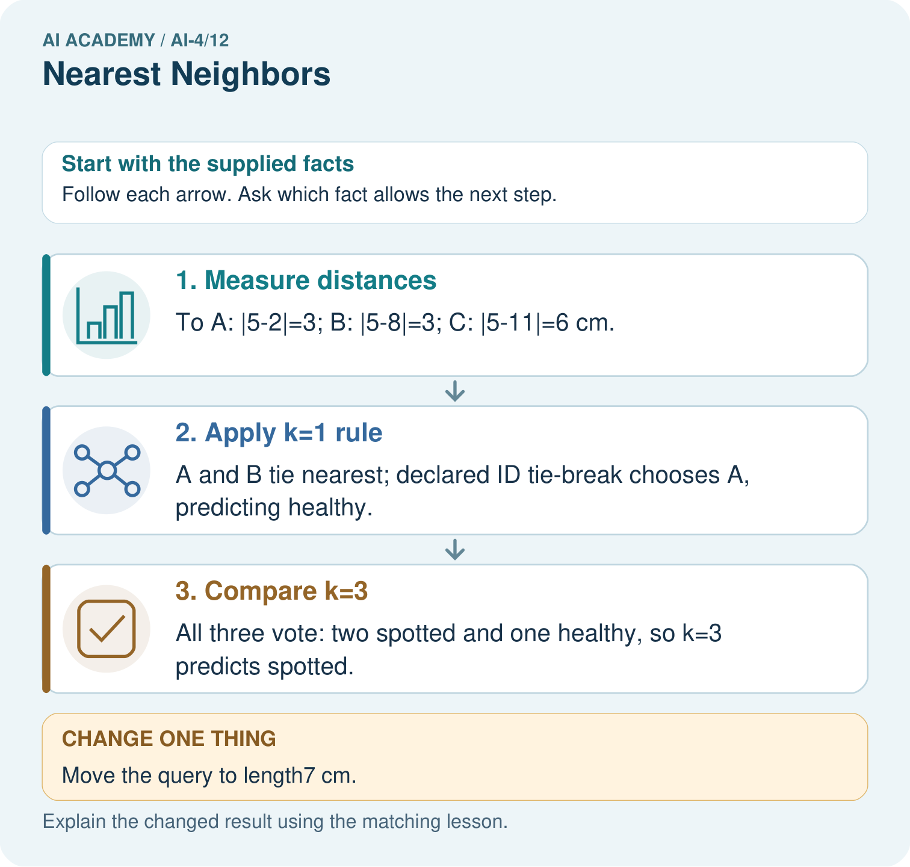

AI Academy · Level 4 · Grade 9 · Week 12 · Workbook
Nearest Neighbors
Learn to understand, design, build, test and explain AI systems responsibly.
Project: Responsible Plant Classifier
Workbook · 1 of 20
Recall and choose your starting point
Try the recall before opening notes. Then use a different colour or a labelled second line to correct your explanation.
Decision Trees
Without opening the old lesson, explain one key idea from Decision Trees. Give an example and a mistake that the idea helps you avoid.
Dataset Cards
Without opening the old lesson, explain one key idea from Dataset Cards. Give an example and a mistake that the idea helps you avoid.
Label Quality
Without opening the old lesson, explain one key idea from Label Quality. Give an example and a mistake that the idea helps you avoid.
Workbook · 2 of 20
Practise with fading help
Use W2: Apply neighbour and tie rules for Nearest neighbours and distances. Record the answer once; the lesson and workbook refer to the same attempt.
| Given inputs | Procedure I chose | Middle steps | Result and check |
|---|---|---|---|
Workbook · 3 of 20
Individual reasoning check
Use the worked case for Nearest neighbours and distances. Proposed explanation: “A negative difference is a negative distance”. Decide whether this explanation is supported. Point to the step or supplied fact that decides; explain your repair if needed.
Workbook · 4 of 20
Independent transfer case
Independent case: Changed independent case
Training points: A length1 healthy, B length5 spotted, C length9 healthy. Query length7. Use absolute distance; for a nearest-neighbor tie choose the alphabetically earlier ID. Compare k=1 and k=3.
Attempt this case before feedback. Record any help. Earlier examples below are further practice; a case already practised with feedback cannot establish fresh transfer.
Workbook · 5 of 20
Your learning target
Training lengths 2(H),6(S),10(H); query=8. Compute distances. Explain the tie and why combining length in mm with width in cm changes a two-feature distance.
Workbook · 6 of 20
Solve the given case
One-dimensional training points: 2 healthy, 4 healthy, 8 spotted. Query=6; absolute distance.
Find k=1 neighbours and handle ties.
Show your trace, calculation or evidence
Workbook · 7 of 20
Check a changed case
For one feature, labeled points are 2:fern and 8:grass. A new point is 6. Under one-nearest-neighbor with absolute distance, predict its label.
My independent answer and reason
Week 12 Test and reflect
Workbook · 8 of 20
Design a revealing test
Create a changed input, boundary case or missing-information case. Write the expected answer or safe response before testing.
| Test record | My evidence |
|---|---|
| Changed input or condition | |
| Expected answer or fallback | |
| Observed result | |
| Why the result occurred |
Workbook · 9 of 20
Project checkpoint
Implement a transparent k-NN paper prototype for the Plant Classifier and record the chosen features, scaling, distance, and k.
The project change and evidence I will keep
Workbook · 10 of 20
Self check
I can explain the mechanism. I can show evidence. I can handle a changed case. I can name a limit. Mark each as not yet, with help or independently, and attach supporting work.
Teacher review ____________________ Next step ____________________
Workbook · 11 of 20
Transfer practice from the original programme
Training lengths 2(H),6(S),10(H); query=8. Compute distances. Explain the tie and why combining length in mm with width in cm changes a two-feature distance.
Record support used: none, hint or teacher explanation.
Workbook · 12 of 20
W1 Calculate feature distances
For query 3 cm, calculate distances to all five training rows. Explain why A and B tie even though their labels differ.
Workbook · 13 of 20
W2 Apply neighbour and tie rules
For query 3, list the selected IDs and predictions for k=1 and k=3 using alphabetical ID order on equal distances. Explain what changes and what remains the same.
Workbook · 14 of 20
W3 Keep evaluation examples separate
Why must the three validation reference labels not enter the neighbour pool? Give the fixed k=3 score and baseline score on the worked validation examples.
Workbook · 15 of 20
W4 Find neighbours independently
New training rows are P at 1 cm clear, Q at 5 blocked, R at 7 blocked, S at 11 clear, T at 13 blocked. For query 6, give all distances, order the IDs by distance then alphabetically, and predict with k=1 and k=3. Using the same training pool and k=3, score validation (6,blocked),(10,clear),(12,blocked). Compare the training-majority baseline.
Workbook · 16 of 20
W5 Interpret a vote and a match
Two of three neighbours vote clear. Does that prove a two-thirds chance of a correct prediction? Does an exact feature match guarantee a correct label? Explain both limits.
Workbook · 17 of 20
Feedback, return check and learning record
| Evidence | My record |
|---|---|
| Worked alone / hint / model | |
| First step I repaired and why | |
| New case checked later; date and result | |
| What I can now explain without notes | |
| One remaining question |
Revisit this idea with your teacher after a delay. Familiarity is different from explaining and using it on a changed case.
Workbook · 18 of 20
Pictorial case practice: Nearest Neighbors
Let a nearest-neighbour picture show each distance before voting.
Training: A length 2 healthy; B length8 spotted; C length11 spotted. Query length5 cm. Distance is absolute difference; ties use alphabetically earlier ID.
All inputs and outcomes in this worked example are invented classroom data; no real model run is claimed.


Why is the k=1 outcome at length5 not uniquely determined without a tie rule? Point to the relevant step in the picture, then write the changed result and the rule or evidence that supports it.
Support used: alone / hint / worked example. This record is practice evidence.
Project connection: For your Responsible Plant Classifier, save the input, procedure, observed result and limitation of this check. Label this worked example as practice; use a different, previously unreviewed case when checking independent understanding.
Workbook · 19 of 20
Project portfolio milestone
Project: Responsible Plant Classifier
Current milestone: Make a transparent first version. Keep a trace of how one input becomes an output; explain the rule or learned component.
For your Responsible Plant Classifier, save the input, procedure, observed result and limitation of this check. Label this worked example as practice; use a different, previously unreviewed case when checking independent understanding.
| Evidence to keep | My record |
|---|---|
| This week’s input and deciding step | |
| Prediction and actual result (or labelled paper trace) | |
| One change since the previous checkpoint and why | |
| One error or limit and the next test |
Workbook · 20 of 20
Supported practice and learning evidence
Use this supported practice once, in the browser or on paper. Keep the reserved independent assessment for a separate first attempt before teacher feedback.
Let a nearest-neighbour picture show each distance before voting.
Practice 1: explain the deciding evidence
Which labelled step matches this detail? All three vote: two spotted and one healthy, so k=3 predicts spotted.
1. Measure distances
2. Compare k=3
3. Apply k=1 rule
Hint if needed: Read the steps in the pictorial case. Match the supplied detail to the stage that performs or records it.
After your attempt, compare with the supported explanation: Compare k=3 All three vote: two spotted and one healthy, so k=3 predicts spotted. Read the picture in order. All three vote: two spotted and one healthy, so k=3 predicts spotted. The arrows show which recorded input or intermediate result each decision uses. Explain the deciding step aloud before checking the changed case; pointing to the final answer alone does not show how it follows.
Practice 2: explain the deciding evidence
Changed-case practice: Move the query to length7 cm. Which conclusion is supported by the supplied facts?
1. This one example guarantees correct results for every future input.
2. k=1 predicts spotted from B, distance1; k=3 remains spotted.
3. We can decide the result without examining the changed input or the procedure.
Hint if needed: Use the changed condition and the deciding step in the pictorial trace. The answer must say what follows from those facts.
After your attempt, compare with the supported explanation: k=1 predicts spotted from B, distance1; k=3 remains spotted. Distances become 5, 1, 4 cm, so the nearest tie disappears.
Repair a missing building block
Review Decision Trees (ai-4/11). Goal: Fit a root question and leaf predictions from training examples. Short practice: Which input distinguishes the original and changed tree? Point to the relevant step in the picture, then write the changed result and the rule or evidence that supports it.. Return to this week and explain what you changed.
Review Dataset Cards (ai-4/9). Goal: Inspect row meaning missing values and repeated records. Short practice: What two counts should the revised card show? Point to the relevant step in the picture, then write the changed result and the rule or evidence that supports it.. Return to this week and explain what you changed.
Review Label Quality (ai-4/6). Goal: Write an observable label rule with boundaries and a review option. Short practice: Why should two annotators not vote away Z’s missing evidence? Point to the relevant step in the picture, then write the changed result and the rule or evidence that supports it.. Return to this week and explain what you changed.
Predict, run and debug
The browser lab lets you edit the supported Python examples already included in this lesson. Predict first, run, inspect the actual output or error, change one input, then run again. Keep code, predictions, actual results and a reasoned revision together. On paper, label your result as a trace rather than an execution.
Keep your completed work
Use Download completed work in the hosted lesson to export your answers, reflections, practice feedback and code-run evidence. Open the HTML copy to read or print it. Drafts stay in this browser when storage is available; clear drafts on a shared device.